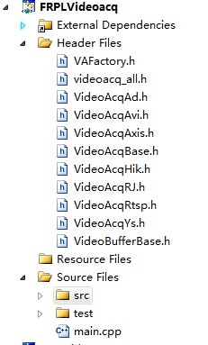

| 目录 | 说明 |
|---|---|
| 3rdparty | 第三方库的include,lib,dll |
| build | 代码库发布版，包含include,lib,src |
| FRPLCore | Core包的构建工程 |
| FRPLGeneral | General包的构建工程 |
| FRPLUtils | Utils包的构建工程 |
| FRPLVideoacq | Videoacq包的构建工程 |
| FRPLViews | Views包的构建工程 |
| copy_build.py | 自动更新build内文件工具 |
每个构建工程即为一个vs2010解决方案(*.sln)，其中包含若干个子工程，以FRPLCore为例
| - FRPLCore
| - FRPLCore, 为Core包的开发和测试工程
| - exinclude, 外部库头文件目录，大部分外部库都会保存在上一层3rdparty目录中，这里仅存放该工程所用到的库，例如单元测试库
| - exlib, 外部库lib目录
| - include, 头文件目录，包含所有会被外部调用的头文件
| - src, 源代码目录，包含.cpp和内部.h(不会被外部调用)
| - test, 测试文件目录
| - etc, 配置文件目录，videoacq会涉及
| - res, 资源文件目录，views会涉及
| - FRPLCoreStatic, 为Core包的构建静态库工程,工程内无子目录（所有文件从FRPLCore中引用）
| - FRPLCoreApp, 为Core包的静态库应用工程(frpl_core的头文件和lib从build中取)
| - 一些测试用的cpp
建立新解决方案时，勾选Create directory for solution
project类型->空工程
all config->multi-Byte
all config->include director .\include;.\exinclude;
all config->lib director .\exlib
添加gtest库
工程filter设定：如图，源代码放置在src目录下，测试文件放置在test目录下，main.cpp与src目录平级

project类型->staticlib,不用precompiled header
all config->multi-Byte
修改target名：
release版FRPLCore应修改target名为frpl_core.lib
debug版应在.lib前加d,即frpl_cored.lib
project类型->空工程
all config->multi-Byte
all config->include director ....\build\xxx
all config->lib director ....\build\xxx
代码库编写优先符合通用的代码规范，FRPL规范定义了一些更细致的要求，为前者的继承文档。
与通用规范一致，目录用小写字母+下划线，文件用大驼峰法
在每个包中应有一个包含全部头文件的文件，例如core_all.h，仅该文件采用与目录相同的命名方式
测试代码应位于test文件夹,命名为xxx_Test.h, xxx_Test.cpp
以面向对象方式组织结构，一个文件中仅含有同一个模块（可以有多个类组成）
所有类均以Fr开头
所有代码均位于命名空间frpl中，例如
namespace frpl{
class FrXXX()
{
xxxxx;
}
} // namespace frpl
严格按照1）中注释要求，对所有公开的文件、类、函数、变量进行注释
该注释用于自动生成文档，因此要严格注意格式
checkout全部代码至本地 https://192.168.1.86/svn/RepositoryFRPL/ProgramLibary/trunk/ProgramLibary
进入计划开发的包目录，例如FRPLCore。
打开FRPLCore.sln，开始进行代码的修改或增加
svn内分为trunk,branches,tags,backup三个目录
开发新功能,修改常规bug
建立新的branches分支：从trunk copy至 branches/新分支名
分支命名为：包名_功能点名_日期
eg: core_newthreads_20140926
开发过程中一直向此分支提交
开发完成后与trunk合并，该分支移动至backup(待删除)
里程碑标记tag
在trunk已达到完成所有功能开发，达到可发布的状态后，将其标记一个tag：
从trunk copy至 tags/新版本名
版本命名：frpl_版本号
eg: frpl_1.0
一般情况下tags目录下的代码属于稳定版，不能进行修改。后续新增的功能均不更新入此版本。只有在hotfix情形下例外
紧急修复bug(hotfix)
当软件发布后，发生严重bug，必须第一时间修复时，启用hotfix机制
可直接checkout tags下代码，修改commit，发布
注意：hotfix后要在trunk同时进行修改，保证bug不会重复出现
每个模块必须编写测试代码，且所有的测试代码都要保存在test目录下，模块名_Test.cpp中
测试代码分为两种：
1.开发测试，用于验证功能完成，可以比较随意。但开发完成后一定要保留，且不能放在main.cpp中。
2.单元测试，详细的验证各个测试条件是否通过。需要编写测试用例。
使用google的gtest单元测试框架进行开发，gtest官网
一般的，在_Test.cpp中增加
// ############### dev test ############### 和
// ############### unit test ###############
来区分开发测试和单元测试
开发新视频采集库的过程
1.开发新的Videoacq派生类及相应测试
需编写VideoAcqXXX.h, VideoAcqXXX.cpp, VideoAcqXXX_Test.cpp2.修改文件VAFactory.h和VAFactory.cpp中内容
1)enum FrVideoAcqType增加项
2)函数FrVideoAcqThread::FrVideoAcqThread中switch增加项
3)函数FrVAFactory::Create中switch增加项
3)LoadConfig函数增加新分支
提交svn的良好习惯
1.在本地运行测试。先保证你完成的代码可以编译，并且能通过所有的单元测试。
2.检出最新的代码。从版本控制系统中更新代码到最新版本，再编译和运行测试，验证你的代码是否和其他人的代码产生冲突。
3.提交代码
目前暂无，由管理人员手工生成文档
copy_build.py 该脚本查找各个包内的.h, .cpp, .lib文件，将其复制如build目录中
如最新修改内容会添加新的依赖库，则需在3rdparty目录中添加该库的.h, .lib, .dll